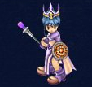
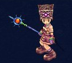
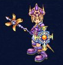
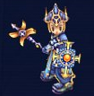

CLASSES / 6つの道
職業・スキル
遠くから狙う、前線で守る、仲間を癒やす。自分の遊び方に合う系統を選びましょう。
初回転職はLv16。アーチャーなどの名前は系統名として使用しています。実際の最初の職業名はScoutなどになります。
ARCHER


アーチャー
遠距離物理 / 行動妨害
弓で距離を保ちながら戦う系統。移動低下や継続ダメージで敵を足止めし、単体攻撃と範囲攻撃を使い分けます。
画像・全スキル・転職を見る →CLERIC
クレリック
回復 / 味方の強化
回復と強化でパーティを支える系統。味方の防御や攻撃を高め、危険な場面では回復・蘇生を担当します。ソロ向けの攻撃手段もあります。
画像・全スキル・転職を見る →ROGUEローグ
近接物理 / 回避・機動力
素早い攻撃と高い回避、移動力を活かす近接系統。毒などの継続ダメージを重ねたり、敵の行動を妨げたりできます。
画像・全スキル・転職を見る →KNIGHTナイト
前衛 / 防御・範囲攻撃
高いHPと防御で前線に立つ系統。複数の敵を相手にする範囲攻撃を覚えます。持てる重量が多いのも特徴です。
画像・全スキル・転職を見る →MAGE
メイジ
魔法火力 / 範囲攻撃
単体・範囲の魔法攻撃で火力を出す系統。防御は低めなので、距離を保ち、味方の前衛や敵への行動妨害を活用します。
画像・全スキル・転職を見る →TEMPLAR

テンプラー
タンク / 自己回復・補助
自己回復と防御強化で前線を維持する系統。序盤を乗り越えながら、仲間を守るSaint Guardianへ成長します。Templarは「テンプラー」と表記しています。
画像・全スキル・転職を見る →転職の目安
Lv16 → Lv66 → Lv96 → Lv131の4段階。必要レベルに到達したら転職クエストを受け、条件を満たして新しい職業へ進みます。
転職クエストの共通手順 →